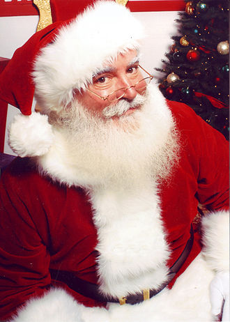
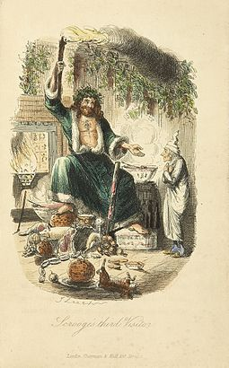
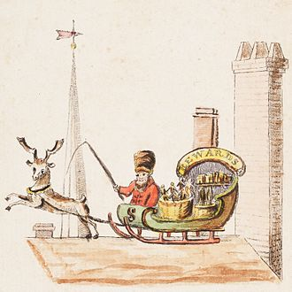

Santa Claus, also known as Father Christmas, Saint Nicholas, Saint Nick, Kris Kringle, or simply Santa, is an imaginary figure originating in Western Christian culture who is said to bring gifts to the homes of well-behaved children on the night of Christmas Eve (24 December) or during the early morning hours of Christmas Day (25 December).
Father Christmas dates back as far as 16th century in England during the reign of Henry VIII, when he was pictured as a large man in green or scarlet robes lined with fur.[13] He typified the spirit of good cheer at Christmas, bringing peace, joy, good food and wine and revelry.[13] As England no longer kept the feast day of Saint Nicholas on 6 December, the Father Christmas celebration was moved to the 25th of December to coincide with Christmas Day.
In 1821, the book A New-year's present, to the little ones from five to twelve was published in New York. It contained Old Santeclaus with Much Delight, an anonymous poem describing Santeclaus on a reindeer sleigh, bringing presents to children.[30] Some modern ideas of Santa Claus seemingly became canon after the anonymous publication of the poem "A Visit From St. Nicholas" (better known today as "The Night Before Christmas") in the Troy, New York, Sentinel on 23 December 1823; Clement Clarke Moore later claimed authorship, though some scholars argue that Henry Livingston, Jr. (who died nine years before Moore's claim) was the author.
